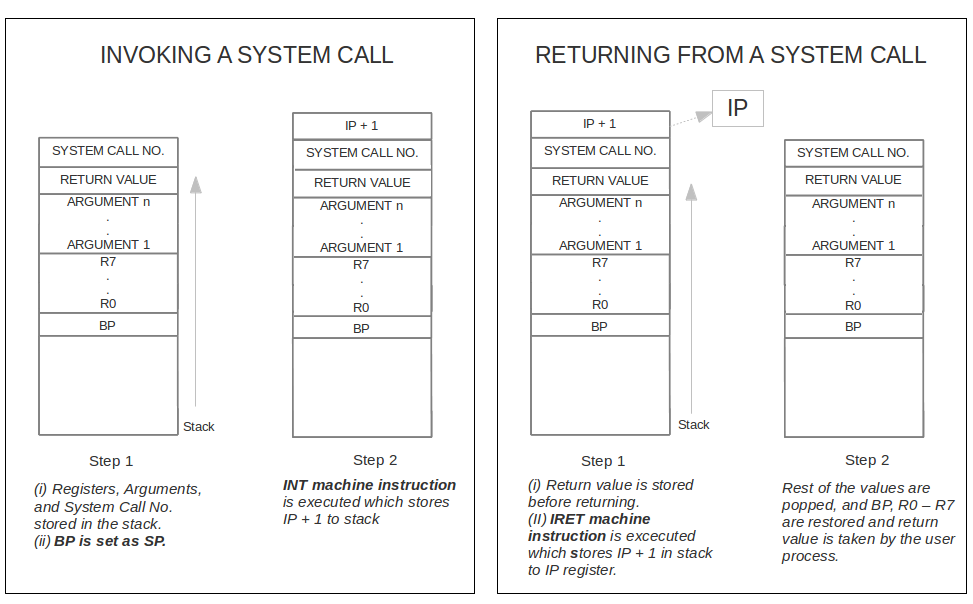

Stage 1: Setting up the System
Follow the instructions in the Usage Documentation to setup the system. The following assumes that the entire package is extracted to $HOME/myxos. If the setting up of the system is done correctly the following directories will be created.
- $HOME/myxos/apl
This directory contains the compiler required to compile user programs to XSM machine instructions. Try out APL compiler using the instructions given here.
- $HOME/myxos/apl/samples - Contains sample APL programs.
- $HOME/myxos/apl_progs - This directory is an empty directory. The user programs written in APL must be saved in this directory.
- $HOME/myxos/spl
This directory contains the compiler required to compile system programs (i.e. operating system routines) to XSM machine instructions. Instructions on how to use SPL compiler is given here
- $HOME/myxos/spl/samples - Contains sample SPL programs
- $HOME/myxos/spl_progs - This directory is an empty directory. The system programs written in SPL must be saved in this directory. The Operating System code written in SPL is to be saved here.
- $HOME/myxos/xfs-interface
This directory contains an interface through which files from linux can be loaded into the File system of XSM (XFS). The interface also provides options for formatting the disk, listing the files loaded into the disk, removing files from the disk, copying continuous blocks from the disk to a file in linux and displaying a file in the disk. Usage instructions and examples can be found here.
- $HOME/myxos/xsm
This directory contains the machine simulator. Usage instructions and examples can be found here.
- $HOME/myxos/doc
This directory contains the complete specification for XOS (Experimental Operating System), XSM (Experimental String Machine), XFS (Experimental File System), APL (Application Programmers Language) and SPL(System Programmers Language) and Usage Documentation
Stage 2: Understanding the Filesystem
The first stage of building XOS begins with understanding the underlying Filesystem (XFS) and its interface.
- Start by formatting the disk in the XFS interface using fdisk command. This can be done by starting the xfs interface
cd $HOME/myxos/xfs-interface
./xfs-interface
This will take you to the xfs-interface prompt. Type the following commands in the xfs-interface prompt
You will be back in the linux shell and a file named disk.xfs is created in the location $HOME/myxos/xfs-interface/. This file simulates the hard disk of the machine.
- Create a data file in your UNIX machine.
A sample data file is given below
There is a place where the sidewalk ends
And before the street begins,
And there the grass grows soft and white,
And there the sun burns crimson bright,
And there the moon-bird rests from his flight
To cool in the peppermint wind.
Save the file as $HOME/myxos/sample.dat
- Load the data file to the XFS formatted disk from your UNIX machine. This can be done by
cd $HOME/myxos/xfs-interface
./xfs-interface
This will take you to the xfs-interface prompt. Type the following commands in the xfs-interface prompt.
load --data $HOME/myxos/sample.dat
- Find out the FAT entry corresponding to the loaded file. See disk organization of XFS Disk. Use the copy command to copy FAT entries (block 10 of the disk) to a file (say fat_block.txt) in your PC as
copy 10 10 fat_block.txt
exit
- Check the FAT entry by viewing the fat_block.txt
file from linux and find the block number of basic block of the loaded data file.
-
Copy the basic block of the file using xfs-interface to a linux file as done above, to get the data blocks used by this file.
- Copy the data blocks from the XFS disk and display it as a UNIX file.
Stage 3: Starting the machine
When the XSM machine is started up, the ROM Code is executed. The page 0 of the machine is called the ROM Code. It is hard coded into the machine i.e the ROM code at absolute address 0 (to 511) is "already there" when machine starts up. The ROM code is called the "bootstrap" loader in OS literature. ROM code does the following operations :
- Loads block 0 of disk to page 1 of memory (absolute address 512).
- After completing 1, sets IP to 512 so that the next instruction to be exected is fetched from location 512 (page 1 in memory starts from location 512).
So if we write a program in SPL, compile it using SPL compiler and load the compiled code to block 0 of disk using xfs-interface, our program will be executed by the machine. This program which we load to block 0 of disk is supposed to be the OS Startup Code. The OS designer must design and program "OS startup code", compile it using the SPL compiler to generate executable program and copy this program to block 0 of the disk (using xfs interface). Once that is done, this code is loaded into page 1 of memory during boot up by the ROM code. Now your program gets control.
In this stage, we will run a system program to print odd numbers from 1 to n and run it as the OS Startup Code in the machine. The steps to do this are explained in detail below.
- Create the program using SPL (System Programmer's Language). It is advised that the system programmer use only the registers R8-R15.
SPL Code to print odd numbers from 1 to n (taken as input)
alias counter R0;
alias n R1;
print "Enter n:";
read n;
counter = 0;
while(counter <= n) do
if(counter%2 != 0) then
print counter;
endif;
counter = counter + 1;
endwhile;
- Save this file as $HOME/myxos/spl_progs/oddnos.spl. Compile this SPL program using the command
. cd $HOME/myxos/spl
./spl --os < $HOME/myxos/spl_progs/oddnos.spl
- Load the file generated by the SPL compiler ( $HOME/myxos/spl/os_startup.xsm ) as the OS startup code to disk.xfs using the XFS Interface (use the command load --os $HOME/myxos/spl/os_startup.xsm from xfs interface).
- Run the machine using the command
. $HOME/myxos/xsm/xsm --disable-timer
The machine has a timer which interrupts the execution at specific intervals and pass the control to timer interrupt routine. We will be dealing with the timer in stage 5 (Interrupts). Until then we will run the machine with the timer disabled. The --disable-timer is used to disable the timer.
The machine will halt after printing all odd numbers from 1 to n
Enter n:
10
1
3
5
7
9
Machine is halting
You may also write a few SPL programs on your own and run it on the machine to get familiarized with SPL syntax. Try using the instructions like breakpoint which translates to BRKP machine instruction. This instruction is useful for debugging. It displays the contents of all the machine registers at the point where the instruction is used.
Stage 4: Running a user program
User programs or application programs are programmed using APL or Application Programmer's Language. A user program is different from a system program which you run on the machine in stage 3. It is to be noted that a system program is executed in kernel mode ( See Privilege modes ). The machine starts its execution in kernel mode. In kernel mode both privileged and unprivileged instructions can be executed. All memory addresses are absolute addresses in kernel mode. A user program should be run in user mode. In user mode only unprivileged instructions can be executed. Also all memory addresses are logical in user mode. In user mode, the machine translates logical addresses to physical addresses using the address translation scheme of the machine. The OS Startup code must load the user program to be executed from the disk to the memory and set up the page tables so that the address translation scheme works correctly.
Before the start of execution of the application program, the mode of execution must be changed from kernel mode to user mode. The value of Instruction Pointer must be set to the starting logical address of the code of the user program (Since all addresses are logical in user mode, program starts executing from logical address 0). Both switching to user mode and setting of the IP is achieved by using ireturn instruction. The ireturn instruction in SPL translates to the machine instruction IRET.
In this stage, an application program in APL is compiled and loaded to the disk as the init process. The first user program which is executed is called the INIT process. INIT program is stored in blocks 13-15 of the XFS disk. It does not have a FAT entry or a basic block. An OS Startup code is written in SPL to load this program to the memory on machine startup.
- Write a program in APL to print all prime numbers lesser than a number taken as input. See Examples of APL programs. In the roadmap, the path of the file is assumed to be $HOME/myxos/apl_progs/prime.apl. This will be the INIT program for this stage.
- Compile your APL program using the command
cd $HOME/myxos/apl
./apl < $HOME/myxos/apl_progs/prime.apl
The output file generated is $HOME/myxos/apl/apcode.xsm
- Load this file to disk.xfs as INIT program using XFS interface
- Create an SPL program with just a halt; instruction. Here, we have assumed its path to be $HOME/myxos/spl_progs/haltprog.spl.
Compile this program using two different flags as shown
cd $HOME/myxos/spl
./spl --int=7 < $HOME/myxos/spl_progs/haltprog.spl
./spl --exhandler < $HOME/myxos/spl_progs/haltprog.spl
Now two files named int7.xsm and exhandler.xsm are created in $HOME/myxos/spl/
Load these files to the XFS Disk (disk.xfs) using filesystem interface ( Use commands load --int=7 $HOME/myxos/spl/int7.xsm and load --exhandler $HOME/myxos/spl/exhandler.xsm ) . These files are responsible for halting the machine upon completion of running user program and when an exception occurs respectively. This is to be loaded into the memory by the OS Startup Code. (You will learn about exception handling and interrupts in later stages).
OS Startup Code
The executable files in INT 7, Exception Handler and the program to print primes must be loaded to the memory from the XFS disk by the OS Startup Code when the machine starts. The OS Startup Code must be written in SPL, compiled and loaded to the disk as done in the stage 2. The new OS Startup Code must do the following tasks.
- Load Exception Handler from disk block 1 to memory page 7 and INT 7 from disk block 9 to memory page 15 using load instruction.
load (page_number, block_number);
- Load the INIT process (program to print primes) from the disk to the memory. In the memory, user programs are stored in pages 16-63. Since INIT is the first process, we will allocate the first 3 pages (pages 16-18) for code. Now the blocks 13-15 from disk are loaded to the memory pages 16-18.
- The next structure to setup is the INIT's Process Control Block. ( See PCB ). The starting address of INIT's PCB is 1536. SPL has a predefined constant READY_LIST with this value stored. Setup the PCB with each corresponding entry.
- Setup page tables for the INIT process in the following way. (See Address Translation).
- Set PTBR (Page Table Base Register) to 1024, which is the starting address of process page tables (See Memory Organization) and PTLR (Page Table Length Register) to 4. This is because a process consists of 4 pages - 3 pages for code and 1 for stack (See Process Structure). Allocate the first page table (address 1024) for the INIT process.
- Each page table entry contains 2 words. Set the first word of each entry to corresponding memory address (16-18) and set the second word (Auxiliary information) as 11 (Valid and Referenced). Refer Paging for the structure of page table entry.
- Setup entries for memory pages 16 to 18 (3 pages are used for code) in the page table as well as one entry for memory page 19 (1 page is used for stack)
Setting up the entries of page table can be done in the following way
[PTBR + 0] = 16; // Entry for memory address of 1st page
[PTBR + 1] = 11; // Entry for flag
.
.
.
[PTBR + 6] = 19; // Memory address of stack
[PTBR + 7] = 11;
-
Next we need to set the stack pointer(SP) and instruction pointer(IP) registers correctly. SP is to be set as 3 * 512. This is because once the user program starts to execute all addresses are logical addresses and stack is allocated the logical page 4. IP cannot be explicitly changed by any instruction. When the machine instruction IRET is executed, first the privilege mode is changed from KERNEL to USER and then the value at the top of the stack is poped out and the IP is set with this value. So to set IP to logical address 0 (code of the user program starts from logical address 0), the value 0 is stored at the top of the stack
Store 0 in address 19 * 512 ( physical page number 19 * page size 512 is the physical address corresponding to top of the stack). The value 0 will get stored in IP after the control passes to user mode. IP value is set to 0 because in user mode, addresses are logical addresses. NOTE: 0 is the starting logical address for IP for any process.
See privilege modes and address translation.
[19*512] = 0;
- Set SP to 3 * 512 (logical page number 3 * page size 512). Before the control passes to the user program, SP (stack pointer) must be set to the logical address of the starting position of the user stack (In this case, INIT process' stack). Why logical address? In user mode all addresses are logical addresses. So before we pass control to user mode, we must set SP to logical address for the machine to work correctly in user mode. NOTE: 3 * 512 is the starting logical address of SP for any process.
SP = 3 * 512;
- Use the ireturn instruction to transfer control to user program. This instruction calls the machine instruction IRET which changes privilege mode from KERNEL to USER (See privilege modes). IRET then gets the value stored in memory location pointed to by SP which is 0 (See step 5) and stores it in IP. The logical address 3*512 stored in SP gets translated to get the actual location of the stack as execution is in USER Mode (See Address Translation).
Stage 5: Interrupts
The XSM machine simulator has 7 interrupt routines, a timer interrupt, and an exception handler. Refer Interrupts and Exceptions. The interrupt instructions can be invoked from an application program using system call interfaces. You will be implementing system calls in the subsequent stages.
In this stage you'll be learning about interrupts. There are two kinds of interrupts - software interrupts and hardware interrupt (timer interrupt).
Implementing a software interrupt
Upon encountering the INT machine instruction in a user program, the OS transfers control to the corresponding interrupt service routine. The interrupt service routines reside in pages 9 to 15 of the memory (See Memory Organization).
In this stage you'll do a test implementation of an interrupt service routine. Your task is to display "Interrupt Invoked" on an INT instructions. Follow these steps to get this done,
- Create an SPL program to print "Interrupt Invoked". The sample SPL program is given below
print "INT";
ireturn;
- Save this file in your UNIX machine as $HOME/myxos/spl_progs/sample_int.spl
- Compile this program using SPL compiler with the flag --int=1. (We will load this program as Interrupt 1).
cd $HOME/myxos/spl
./spl --int=1 < $HOME/myxos/spl_progs/sample_int.spl
- The output file generated will be $HOME/myxos/spl/int1.xsm
- Load this file to the XFS disk as interrupt 1 using xfs-interface.
- Create a user program to invoke INT. We'll program it using XSM Machine instructions for simplicity.
START
MOV R0, "Before INT"
OUT R0
INT 1
MOV R0, "After INT"
OUT R0
END
- Load it directly to the XFS disk as init program. This program is already in XSM machine code, and hence it need not be compiled.
- Modify the OS Startup Code to load the INT 1 routine from disk block 3 (See Disk Organization) to memory page 9 (See Memory Organization). Add the following line to OS startup code
load (9, 3);
- Compile the OS Startup Code using SPL compiler. Load the compiled output file os_startup.xsm to the XFS disk
- Run the machine by disabling the timer.
$HOME/myxos/xsm/xsm --disable-timer
You'll get the following output on the screen.
Before INT
INT
After INT
Machine is halting
Timer Interrupt
The XSM simulator has a timer which invokes the timer interrupt routine after specific number of instructions. In usual machines, the timer interrupt is triggered at specific intervals of time. However in XSM, it is triggered after a specific number of instructions. Refer Timer Interrupt.
In this task, we'll create a timer interrupt routine, which prints "TIMER". This can be done in the following steps.
- Create an SPL program to print "TIMER". The sample SPL program is given below
print "TIMER";
ireturn;
- Save this file in your UNIX machine as $HOME/myxos/spl_progs/sample_timer.spl
- Compile this program using SPL compiler with the flag --int=timer
cd $HOME/myxos/spl
./spl --int=timer < $HOME/myxos/spl_progs/sample_timer.spl
- The output file generated will be in $HOME/myxos/spl/timer.xsm
- Load this file to XFS disk as Timer Interrupt Routine using xfs-interface.
- Compile the sample program to print numbers upto 20 using APL compiler and load it as the INIT program to XFS disk. The sample program is available at $HOME/myxos/apl/samples/printnum.apl
- Use the same OS Startup Code used previously
- Run the machine this time without disabling the timer, to see the timer interrupt routine in action
. $HOME/myxos/xsm/xsm
You'll get the following output on the screen with the timer interrupt enabled
1
2
TIMER
3
4
5
6
7
TIMER
8
9
10
11
12
TIMER
13
14
15
16
17
TIMER
18
19
20
Machine is halting
Stage 6: Getting started with Multiprogramming
Multiprogramming refers to running more than one process simultaneously. In XSM, the timer interrupt is triggered after a fixed number of instructions are executed in user mode, and the control is passed to Page 8, i.e. the timer interrupt routine. The timer interrupt routine saves the context of the current process in its Process Control Block ( PCB ), schedules and dispatches a new program to run on the machine. In this stage we run two programs simultaneously on the machine. The machine is run without disabling the timer.
In this stage the OS Startup Code loads two programs into the memory and starts the execution of one program. The timer interrupt routine when invoked saves the context of current running process and starts the execution of the other process.
The things to be done in this stage are:
- Create 2 user programs in APL
- Write an APL program to print all odd numbers from 1 to 20 and save it as $HOME/myxos/apl_progs/odd.apl
- Compile this program using APL compiler and load the apcode.xsm file generated to the disk using xfs interface as init program.
- Write another APL program to print all even numbers from 1 to 20 and save it as $HOME/myxos/apl_progs/even.apl
- Compile this program using APL compiler and load the apcode.xsm file generated to the disk using xfs interface as an executable file
- Use the xfs interface to find the data blocks to which this file is loaded. This was done in Stage 2. We assume in this roadmap that this file is loaded to blocks 16 - 19, the basic block of the file at block 16 and the data blocks at blocks 17, 18 and 19. Note that this may not be the actual case.
- Modify the OS Startup Code
The current OS startup code loads only the init process and sets the process structures of only one process (init process). For this stage, it has to be modified to load the second program and set up PCB and page table of this process also. But for the subsequent stages, the current OS Startup code is enough. So before making changes to the current OS Startup Code, take a backup copy of it so that it can be used for the subsequent stages.
Before calling ireturn statement in the OS Startup Code do the following:
- Load the code blocks of the second program from disk (We have assumed that the code blocks are stored in blocks 17 - 19 in the disk) to pages 20 - 22 in memory.
load(20,17);
load(21,18);
load(22,19);
- For the second process all the entries in the PCB must be setup. This is because the timer interrupt routine loads the context of this process from its PCB. PID field in the PCB of the second process is set to 1 and STATE field is set to 1 (ready)
[READY_LIST + 32] = 1; //PID
[READY_LIST + 33] = 1; //STATE
- The values for the register SP, BP, IP, PTBR and PTLR are set as:
[READY_LIST + 34] = 3 * 512; //SP
[READY_LIST + 35] = 3 * 512; //BP
[READY_LIST + 36] = 0; //IP
[READY_LIST + 37] = 1024 + 8; //PTBR
[READY_LIST + 38] = 4; //PTLR
Stack allocated for the process starts from logical page no 3. So SP and BP fields are set to the start of this page. Code area of the process starts from logical address 0, so IP field is set to zero. The page table of the process should start from 1024 + PID*8, since page table of each process in our operating system is 8 word long (4 entries each of 2 word size). Field for PTLR is set to 4 since only 4 pages are allocated for the process (3 code pages and a stack page).
The rest of the entries of the PCB may not be set now. You will deal with them in subsequent stages.
- Add the instruction to load the timer interrupt routine from disk block 2 to memory page 8.
load(8,2);
- Next task to be done in this stage, is to program the Timer Interrupt in SPL, compile it and load it to the disk.
The timer interrupt routine must perform the following actions:
- Find the location of the PCB of the current process using the value of PTBR by following these instructions.
- The starting address of the ready list of PCBs is 1536. READY_LIST is a predefined constant in SPL which has value 1536 (ERROR: !!! Refer to memory organization). Size of PCB of each process is 32 words. The starting address of the PCB of the current process can thus be calcluated using this instruction. (ERROR: !!! Alias PCB_Start)
PCB_Start = READY_LIST + 32 * ProcessID;
NOTE: This calculation is specific to our operating system. In general adresss of PCB of current process is not obtained like this.
- Store the values of the current process in its PCB as shown below.
[ PCB_Start + 0 ] = ProcessID; //PID
[ PCB_Start + 1 ] = 1; // STATE : Waiting for the CPU
[ PCB_Start + 2 ] = BP;
[ PCB_Start + 3 ] = SP;
[ PCB_Start + 4 ] = [absoluteSP - 1]; // IP gets stored in SP by machine
[ PCB_Start + 5 ] = PTBR;
[ PCB_Start + 6 ] = PTLR;
[ PCB_Start + 7 ] = R0;
.
.
[ PCB_Start + 14] = R7;
- Scan the Ready List of PCBs in a circular manner from the PCB of current process to check for the next process with STATE 1 (Waiting for the CPU). Store the address of the PCB found in a register.(ERROR !!! Ready List Link)
- Load the fields from this PCB to the corresponding registers.
- Find the physical address of SP corresponding to newly found PCB. (ERROR !!! Explain More + Links) Store IP from this PCB to the location pointed by the physical address of SP. This is to ensure that the IRET sets the IP to its correct value after return from the interrupt.
- Use ireturn instruction to return to USER Mode
- Compile the OS Startup Code and Timer interrupt using the SPL Compiler.
- Load the new OS Startup code and timer interrupt routine to the xfs disk using xfs interface.
- Run the machine without disabling timer
The programs will run in an interleaved fashion if the timer interrupt is working correctly.
Stage 7: Creating Files
In this stage, you'll learn to implement a system call . System calls are interfaces provided by the operating system to the user programs to run a system routine. The system calls in XOS are invoked using commands in SPL which will call a specific INT instruction. The (ERROR !!! INT) instruction invokes an interrupt service routine, as done in stage 5.
In this stage we'll modify the Interrupt 1 routine to implement the funtionality to create files in the XFS disk. Interrupt 1 is used by two system calls Create and Delete. (See File System Calls).
Modifying the OS Startup Code
(ERROR !!! Uniprocessing mode, we'll disable timer till then) Modify the OS Startup Code in Stage 5. The OS Startup Code modifications done in Stage 6 can be discarded as it was done to test the timer interrupt routine.
- Load FAT from disk block 10 to memory page 5 and Disk Free List from the disk block 11 to memory page 6. Refer Memory Organization and Disk Organization .
-
Set the FAT Entry and File Open Count of 64 entries of the System-Wide Open File Table to -1.
alias counter R8; // R8 - R15 is used by system programmers.
counter = 0;
while ( counter <= 128) do
[ FILE_TABLE + counter] = -1;
counter = counter + 1;
endwhile;
- Set all words in the Per-Process Open-File Table in the PCB of INIT to -1 (ERROR !!! Why)
- You've already written code to load Interrupt routine 1 from the disk to the memory in stage 5.
Check if this instruction is present in the OS Startup Code.
load (9, 3);
This instruction loads disk block 3 (containing interrupt 1 routine) to memory page 9 (See Memory Organization).
A user program invokes a system call by first pushing the registers, arguments and system call number into the stack and then invoking INT instruction corresponding to the system call.

This figure shows the contents of the stack before a system call is exectued and after it comes back to the user program. A system call in an APL program compiles to a set of instructions for setting up the stack (Figure a. Step 1) followed by the corresponding INT instruction (Figure a. Step 2). The INT instruction passes control to the corresponding Interrupt routine. In the case of Create it corresponds Interrupt Routine 1. After the interrupt routine performs the required actions, it passes control back to the user program (Figure b. Step 1 and 2).
An Interrupt Routine may contain more than one system call implementation. The system call number is obtained from the stack (Stack Pointer - 1). Based on the system call number, the corresponding system call actions are performed. To access the stack in KERNEL mode, the physical address of the top of the stack must used. The physical address of the top of stack is calculated as: (ERROR !!! EXPLAIN MORE AFTER THIS) The 6th word in the Page Table (obtained from PTBR + 6) gives the starting address of the stack, and SP%512 will give the offset in the stack. Adding both will give the absoulte address of SP.
A skeleton of Interrupt 1 Routine is given below.
alias absoluteSP R8;
absoluteSP = [PTBR + 6] + SP % 512 ;
.
// Get system call no. from the stack
.
if ( sysCallNo == 1) then
// Implementation of Create (to be done in this stage !)
.
.
endif;
if ( sysCallNo == 4) then
// Implementation of Delete
.
.
endif;
In this stage we'll implement the Create System Call. Delete and other system calls will be implemented in later stages.
(ERROR !!! Give an Overview)
- (ERROR !!! Look for a free entry in DFL from 13 to 447) First of all, the memory copy of the disk free list is searched till the entry for block number 447 to find a free block number (indicated by a 0 entry in the disk free list). Blocks 448 - 511 are reserved for swap area which will be used for virtual memory management (Stage 9). (ERROR !!! about 0 - 12) This block is used as the basic block of the file to be created. It's entry is set to 1. The block number is stored to a register. If no free block is found return -1 (as done in the previous step).
- The filename specified as argument is stored in the stack at (ERROR !!! ) absoluteSP - 2. Fetch it and store it to a register.
- The memory copy of the FAT is to be searched for the filename to check if the file already exists. If it exists return from the sytem call with 0 (success).
- Next, the memory copy of the FAT is searched for a free entry. A free entry in the FAT is indicated by -1 in the entry for basic block (Word 2 of each FAT entry). If no free entry is found put -1 in the return value space of the stack (absoluteSP - 12, See figure above). Then return to USER Mode using ireturn instruction. Address of FAT is stored in a predefined constant in FAT in SPL.
- filename and the free block number obtained in the previous steps are stored in the Filename field and basic block number field of the free FAT entry respectively.
(ERROR !!! BASIC BLOCK)
- The file size field of the FAT entry is initialized to zero.
(ERROR !!! Explain why the code is here!!)
alias counter R8;
counter = 0;
while(counter < 512) do
if([FAT + counter + 2] == -1) then
.
// Set the FAT entry
.
break;
endif;
counter = counter + 8;
endwhile;
// Return with -1 if there is no free entry
if(counter == 512) then
[absoluteSP - 12] = -1;
ireturn;
endif;
- Load the basic block of the file from the disk to the scratchpad . Each entry of the block list in the basic block is initialized to zero and it is stored back to the disk.
- The updated copies of FAT and disk free list in the memory are then stored back to the disk.
- The return value of this system call is 0 in case of success and -1 in case of failure. The return value is stored in the stack at address Stack Pointer - 12. The value of stack pointer is obtained from absoluteSP.
- Use an ireturn instruction to transfer control back to USER Mode.
Check if the file is created by using the ls command in the XFS interface.
Stage 8: Playing with files
We have already created files using the "Create" system call. Now we will implement the remaining
system calls - Open, Close, Delete, Write, Seek and Read.
File System Calls
| System Call Name | System Call # | Interrupt Routine # |
|---|
| Create | 1 | 1 |
| Open | 2 | 2 |
| Close | 3 | 2 |
| Delete | 4 | 1 |
| Write | 5 | 4 |
| Seek | 6 | 3 |
| Read | 7 | 3 |
Open
System Call No: 2
Interrupt Routine No: 2
Arguments: filename
Return Value: 0 (Success) or -1 (Failure)
Opens a file with the filename given as argument.
- Memory copy of FAT is searched for the filename (get the filename from stack as explained in the Create system call) . If the entry is not found, -1 is returned. Otherwise, store the index of the FAT entry in a register.
- Then, the System-Wide Open File Table is searched for the FAT Index found in the previous step. If an entry is found, increment the File Open Count.
- If an entry is not found with the FAT Index, then search for a free entry in the System-Wide Open File Table. If there are no free entries (indicated by -1 FAT Index field), return from the system call with return value -1. Otherwise, store FAT Index and set the File Open Count field as 1 in free entry found.
- Store the index of the entry (in System-Wide Open File Table) in a register.
- Every process will have a Per-Process File Table in its PCB. This stores the details of files opened by this process. Find the PCB's location using the value of PTBR (It may be directly obtained if there is only one process, however following a general approach to get PCBs will be useful when more than one process starts running). Recall that using the value of PTBR we can find the ProcessID using the formula.
ProcessID = (PTBR - 1024) / 8;
Page Tables start at word address 1024. And size of each per-process page table is 8 words. NOTE: This calculation is specific to our operating system. In general Process ID is not obtained from the value of PTBR.
We can find the PCB of the current process using the ProcessID as done in earlier stages.
PCB_Start = READY_LIST + 32 * ProcessID;
- A free entry is searched in the per-process open file table in the PCB of the process. A free entry is indicated by -1 in the first field (Pointer to System-Wide Open File Table). If there are no free entries, -1 is returned by the system call.
- Otherwise, set the Pointer to System-Wide File Table Entry field to the index stored in Step 4 and set LSEEK Position to 0.
- The index of this entry in the local file table is returned as a return value of the system call. This is known as the file descriptor.
Close
System Call No: 3
Interrupt Routine No: 2
Arguments: fileDescriptor
Return Value: 0 (Success) or -1 (Failure)
Closes a file opened by the process.
- Get the address of PCB of the process as in the Open System Call implementation.
- Index into the per-process open file table using the argument fileDescriptor. Return from the system call with -1 (failure) if the fileDescriptor is invalid or its corresponding entry is invalid.
- Using the Pointer to System Wide Open File Table Entry field, index to the System Wide Open File Table and decrement File Open Count by one. If it becomes 0, invalidate the entry by setting both the fields to -1.
- Now invalidate the Per-Process Open File Table entry, by setting the fields to -1
- Return from system call with 0 (success).
Delete
System Call No: 4
Interrupt Routine No: 1
Arguments: filename
Return Value: 0 (Success) or -1 (Failure)
Deletes a file in the disk with the filename given as argument.
- Search the memory copy of FAT for the filename specified as argument. If it is not found, return from the system call with -1 (failure).
- If an entry is found, store the index in a register.
- Search the System Wide Open File Table to see if the file has been opened. If it is opened, return from the system call with -1 (failure)
- Otherwise, follow the steps to invalidate and delete the file
-
- Load the Basic Block to the Scratchpad.
- For each block used by the file (specified in the Basic Block), invalidate the corresponding block's entry (Setting -1) in the memory copy of the Disk Free List
- Invalidate the entry for the basic block in the Disk Free List by setting -1.
- Invalidate the FAT entry by setting -1 in the Block # of Basic Block field.
- Store back the FAT and Disk Free List from the memory to the disk.
- Return from the system call with 0 (success)
Write
System Call No: 5
Interrupt Routine No: 4
Arguments: 1) fileDescriptor 2) wordToWrite
Return Value: 0 (Success) or -1 (Failure)
Writes a word specified by wordToWrite to a file opened by the process.
- Get the arguments to registers from the stack
- Get the address of PCB of the process.
- Index into the per-process open file table using fileDescriptor. Return from the system call with -1 (failure) if the fileDescriptor is invalid or its corresponding entry is invalid.
- Otherwise, store the LSEEK position to a register.
- Using the Pointer to System Wide Open File Table Entry field, index to the System Wide Open File Table to get the FAT Index Entry.
- Fetch the basic block from the FAT and load it to the scratchpad
- Using LSEEK position find the block number to be written to. Find its location in the disk from the basic block. If entry for the block is invalid, then allocate a new block in the following way.
- Traverse through the memory copy of the Disk Free List till the entry for block 447 to get a free block.
- If no free block is avaliable. Return from the system call, with return value -1 (failure).
- Otherwise, set 1 in the entry for the free block in the Disk Free List. Update the basic block with this block number.
- Commit the basic block from scratchpad back to the disk.
- Increment the file size in the FAT entry by 1.
- Commit the FAT and Disk Free List from the memory to the disk.
- Fetch this block from the disk to the scratchpad.
- Write the argument wordToWrite to this block using the offset calculated using LSEEK position.
- Commit this block back to disk
- Increment LSEEK Position by 1 in the Per-Process Open File Table
- Return from the system call with 0 (success)
Seek
System Call No: 6
Interrupt Routine No: 3
Arguments: 1) fileDescripto r 2) newLseek
Return Value: 0 (Success) or -1 (Failure)
Changes the value of LSEEK position of the file to newLseek.
- Get the arguments to registers from the stack
- Get the address of PCB of the process.
- Index into the per-process open file table using fileDescriptor. Return from the system call with -1 (failure) if the fileDescriptor is invalid or its corresponding entry is invalid.
- Using the Pointer to System Wide Open File Table Entry field, index to the System Wide Open File Table to get the FAT Index Entry.
- Fetch the file size of the file from the FAT and store it in a register.
- If value of the argument newLseek is between 0 and file size * block size, change the LSEEK in the per-process file table to newLseek. Return with 0 (indicating success).
- Otherwise, return with -1 (indicating failure).
Read
System Call No: 7
Interrupt Routine No: 3
Arguments: 1) fileDescriptor 2) Variable
Return Value: 0 (success) and -1 (failure)
Reads a word from a file to the variable passed as argument
- Get the arguments to registers from the stack
- Get the address of PCB of the process.
- Index into the per-process open file table using fileDescriptor. Return from the system call with -1 (failure) if the fileDescriptor is invalid or its corresponding entry is invalid.
- Otherwise, store the LSEEK position to a register.
- Using the Pointer to System Wide Open File Table Entry field, index to the System Wide Open File Table to get the FAT Index Entry.
- Fetch the basic block from the FAT and load it to the scratchpad
- Using LSEEK position find the block number to be read from. Find its location in the disk from the basic block. If entry for the block is invalid, return with value -1 (indicating failure).
- Else, fetch this block from the disk to the scratchpad.
- Read from this block using the offset calculated using LSEEK position.
- This value is stored in the stack in position of Argument 2. Store the word read to absoluteSP - 2.
- Return with 0, indicating success
Stage 9: Exec, Fork, Exit and Halt System Calls
There are several process system calls which are used to create processes, load a new process to an existing process, exit from a process and halt the machine. These system calls are Exec, Fork, Exit and Halt.
Fork system call :
The Fork system call is used to replicate the process which invoked this system call in the memory.
System Call No: 8
Interrupt Routine No: 5
Arguments: None
Return Value: PID of the process created (success) or -1 (failure)
Interrupt 5 Routine must be programmed in SPL, compiled and loaded to disk. It must perform the following tasks.
- The Ready list of PCBs is traversed to find a PCB with State 0 (terminated).
- If no such PCB is found, -1 is returned.
- The index of the PCB in the Ready List is the PID of new process created. It is stored in a register.
- The pages used by the parent process is replicated in the following way
- The page table of the parent process is checked to count the number of valid pages. The memory free list is checked to find an equal number of free pages. If this check fails, return with -1 indicating failure.
- Otherwise an equal number of pages are allocated by updating the memory free list.
- Make corresponding entries in the child process' page table. The child's PTBR (address of its page table) is computed using PID stored in Step 3
- The current register values of the parent process are (except PTBR) copied to the child process' PCB. The entry for PTBR is the child's PTBR computed in the previous step. (DO NOT copy values from parent's PCB to child's PCB as it may not be equal to current values)
- The Per-Process Open File table of the parent process is not copied to child's PCB. Instead invalidate all entries in child's Per-Process Open File Table
- Control is passed back to the parent process using ireturn.
OS Startup Code is modified to
- Load Interrupt 5 Routine. (The code to load the 2nd process in the previous stage can now be removed)
- The entries for pages 0 to 15 in the memory free list is marked as used (set 1) and others as unused (set 0). Pages 0 - 15 are reserved for OS structures. See Memory Organization
To test Fork(), use Exec with program to print odd numbers after issuing a Fork from the INIT program (to print even numbers).
Exec system call :
The Exec system call is used to load and run a new process from a currently running process. The current process is overwritten by new process i.e. the process data structures of the current process is used by the new process.
System Call No: 9
Interrupt Routine No: 6
Arguments: filename
Return Value: 0 (success) and -1 (failure)
The Interrupt 6 Routine is to be programmed in SPL, compiled and loaded to the disk.
OS Startup Code is modified to load Interrupt Routine 6 from the disk to memory.
The Interrupt 6 Routine performs the following actions.
- Get the filename to a register from the stack
- Search for the filename in the memory copy of FAT. If it doesn't exist return -1 (indicating failure).
- Otherwise fetch the basic block (location is obtained from FAT) and place it in the scratchpad.
- Load the blocks of the file (a maximum of 3 blocks) to the memory in pages of the current process.
- Close all files opened by the current process by following the steps in Close() system call
- SP is reset to 3*512.
- 0 is stored in 19*512 (physical address of the stack) to set IP by the ireturn instruction
- Return from the system call with 0 (indicating success).
Exec system call can be tested out by modifying the INIT program, by adding an Exec call in it.
Exit system call :
This system call is used to terminate the execution of the process which invoked it. Exit removes this process from the memory. If there is only one process, it halts the system.
System Call No: 10
Interrupt Routine No: 7
Arguments: None
Return Value:-1 on failure, exits on success
Halt system call :
System Call No: 0
Interrupt Routine No: 7
Arguments: None
Return Value:-1 on failure, halts on success
If there is only one process in memory, it halts the system. Otherwise returns -1.
Both Exit and Halt are implemented in Interrupt 7 Routine. It is to be programmed in SPL, compiled and loaded to the disk using XFS Interface. It does the following tasks
- If there is only one process, halt the system using HALT instruction irrespective of the system call
- If its Exit system call, do the following actions
- Find the PCB of the current process using PTBR
- Close all files opened by the process as done for Close system call
- Set the STATE in the PCB to 0.
- Invalidate all entries in its per-process page table (Set Address field to -1)
- Find the next waiting process from the Ready List of PCBs
- Get the IP from its PCB and store it in its stack (Compute absolute address of its SP)
- And use ireturn instruction to transfer control.
- Otherwise, exit with -1
OS Startup Code is modified to load Interrpt 7 from disk to memory.
Stage 10: Exception Handling and Demand Paging
Exception Handler in XOS handles exceptions caused by machine. When an exception occurs, the machine sets the EFR (Exception Flag Register) and calls the Exception Handler in Page 7. You must read about Exceptions before proceeding .
This stage involves programming the Exception handler in SPL, compiling and loading it to disk. The OS Startup Code must be modified to load the exception handler from disk to memory on startup.
The exception handler must do the following :
- The details corresponding to the exception is stored in EFR register. The individual values in EFR must be extracted to registers.
Cause = EFR % 10; // Gets value of cause field (size 1 char)
VPagenum = (EFR / 10) % 100; // Gets value of BadVAddr
Ip_addr = (EFR/1000); //Gets value of IP at the point of exception
-
If Cause is a value other than 0, Display the error and exit the process which caused the exception. The process can be identified by the current PTBR value. Follow the steps done in Exit system call implementation.
-
If Cause it is 0 (Page Fault), the following actions have to be performed.
- Allocate a free page by searching through the memory free list. If a free page is not found, follow the page replacement technique, described later to find a free page. Store its page number in a register
- Get the physical page number field corresponding to VPagenum from the Per-Process page table of process that caused the exception.
- If the physical page number field of the Per-Process Page Table is a disk block number, load the disk block to the free page allocated in Step i. Otherwise, this step can be omitted.
- Set the Per-Process Page Table entry corresponding to VPagenum with the page number of free page and set the Auxiliary flag as 11. (Valid and Referenced)
- Put Ip_addr to the memory location pointed to by the physical address of SP.
- Return to USER Mode using ireturn instruction.
Page-Replacement Algorithm
The page replacement technique used in XOS is a Second Chance Algorithm which uses the reference bits in the auxiliary information. The steps are as follows
-
It scans the valid entries in the Per-Process Page Tables of all processes in a circluar fashion and checks for a page with reference bit '0'.
-
The scanning starts from the current page table entry which issued a page fault.
- Whenever a page with reference bit '1' is encountered it is set to '0' and goes to the next page, giving a referenced page a second chance.
- When a page with reference bit '0' is encountered it is selected as the victim page. Then
- Memory copy of Disk Free List is scanned for a free block in the swap area (blocks 448 - 511).
- If no free block is found the corresponding process will be terminated
- If a free block is found, the victim page is stored on that block and memory copy of Disk Free List is updated.
- The entry for the victim page in the Per-Process Page Table is updated with the address of this block and is set as invalid.
Modifications to OS Startup Code and Exec system calls
When a process is loaded, only the disk addresses of the corresponding code blocks needs to be set in the page table and its Auxiliary Information is set to 00 (Invalid and Unreferenced). Put the Physical Address field of remaining entries are set to -1 with Auxiliary Information as "00". The disk blocks need not be loaded initially. It will be loaded by pure demand paging strategy when required.
Modifications to Fork
For Fork system call, when it copies the address space, duplicate all valid addresses as done earlier. If the entry in the page table of the parent process is invalid,
-
If it is a disk address less than 448 (not swap area), copy the entry directly to the page table of the child.
-
If it is a disk address >= 448 (swap area), check the disk free list and get a free swap block. Copy the contents of current swap block to the newly allocated swap block by using scratchpad. Set the page table of the child with the newly allocated swap block number and copy the Auxiliary Information from the parent's page table entry.
-
If the address is -1, do nothing.
Stage 11: Making a console
The final stage is to make the INIT process act like a console. INIT written in APL, should be an infinite loop, which takes in filenames. This filename should correspond to the program to be executed.
It should Fork itself and Exec using the filename. Appropriate errors must be reported.
AND THAT'S YOUR OWN